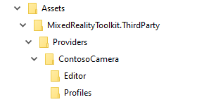
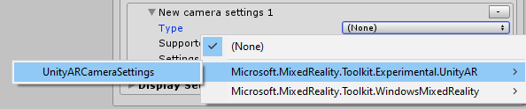

Creating a Camera Settings Provider (创建相机设置提供者 )
相机系统是可扩展的系统，用于为平台特定的相机配置提供支持。为了增加对新相机配置的支持，可能需要自定义设置提供者。
[!注意] 导入Microsoft.MixedReality.Toolkit.Unity.Extensions程序包后，可以在MixedRealityToolkit.Extensions\Providers\Experimental\UnityAR文件夹中找到本示例中使用的完整源代码。
命名空间和文件夹结构
数据提供者可以通过以下两种方式之一进行分发：
- 第三方插件
- Microsoft混合现实工具包的一部分
向MRTK提交新数据提供者的批准过程将视具体情况而定，并会在提交初步建议时通知。可以通过创建一个新的功能请求类型问题来提交.
第三方插件
命名空间
数据提供者必须具有命名空间以减轻潜在的名称冲突。建议命名空间包括以下组件。
- 产生附件的公司名称
- 功能区
例如，由Contoso公司创建和交付的相机设置提供者可能是* Contoso.MixedReality.Toolkit.Camera*。
文件结构
建议将数据提供者的源代码放在文件夹层次结构中，如下图所示。

ContosoCamera文件夹包含数据提供者的实现，而Editor文件夹包含检查器（以及其他任何Unity编辑器特定的代码），Profiles文件夹包含一个或多个预制的配置文件脚本对象。
MRTK 提交
命名空间
如果相机设置提供者正在提交给混合现实工具包仓库，命名空间必须以Microsoft.MixedReality.Toolkit（例如：Microsoft.MixedReality.Toolkit.CameraSystem）开头。
文件结构
所有代码都必须位于MixedRealityToolkit.Providers下的文件夹中（例如：MixedRealityToolkit.Providers\UnityAR）。
定义相机设置对象
创建相机设置提供者的第一步是确定它将提供给应用程序的数据类型（例如，网格或平面）。
所有空间数据对象都必须实现IMixedRealityCameraSettingsProvider
接口。
Implement the settings provider (实现设置提供者 )
指定接口 和/或 基类继承
所有相机设置提供者都必须实现IMixedRealityCameraSettingsProvider
接口，这个接口指定了相机系统所需的最低功能。MRTK foundation包括BaseCameraSettingsProvider
类，它提供所需功能的默认实现。
namespace namespace Microsoft.MixedReality.Toolkit.Experimental.UnityAR
{
public class UnityARCameraSettings : BaseCameraSettingsProvider
{ }
}
应用MixedRealityDataProvider属性
创建相机设置提供者的关键步骤是应用 MixedRealityDataProvider
属性。此步骤允许在相机系统配置文件以及名称、文件夹路径等中选择时为数据提供程序设置默认配置文件和平台。
[MixedRealityDataProvider(
typeof(IMixedRealityCameraSystem),
SupportedPlatforms.Android | SupportedPlatforms.IOS,
"Unity AR Foundation Camera Settings",
"UnityAR/Profiles/DefaultUnityARCameraSettingsProfile.asset",
"MixedRealityToolkit.Providers")]
public class UnityARCameraSettings : BaseCameraSettingsProvider
{ }
实现IMixedRealityDataProvider方法
定义了类后，下一步就是提供 IMixedRealityDataProvider 接口的实现。
[!注意]
BaseDataProvider类，通过BaseService类，提供IMixedRealityDataProvider方法的空实现。这些方法的细节通常是特定于数据提供者的。
数据提供者应实现的方法是：
Destroy()Disable()Enable()Initialize()Reset()Update()
[!注意] 并非所有的设置提供者都需要所有这些方法的实现。强烈建议至少实现
Destroy()和Initialize()
实现数据提供者逻辑
下一步是通过实现 IMixedRealityCameraSettingsProvider来添加设置提供者的逻辑。数据提供者的这一部分通常是特定于相机配置的。
创建配置文件和inspector
在Mixed Reality Toolkit中，数据提供者的配置使用配置文件.
定义配置文件
配置文件内容应反映开发人员可选择的配置选项。每个接口中定义的任何用户可配置属性也应包含在配置文件中。
using UnityEngine.SpatialTracking;
namespace namespace Microsoft.MixedReality.Toolkit.Experimental.UnityAR
{
[CreateAssetMenu(
menuName = "Mixed Reality Toolkit/Profiles/Unity AR Camera Settings Profile",
fileName = "UnityARCameraSettingsProfile",
order = 100)]
public class UnityARCameraSettingsProfile : BaseCameraSettingsProfile
{
[SerializeField]
[Tooltip("设备上用于读取姿势的部分(例如：彩色相机).")]
private ArTrackedPose poseSource = TrackedPoseDriver.TrackedPose.ColorCamera;
/// <summary>
/// 从设备中读取姿势的部分(例如：彩色相机).
/// </summary>
public ArTrackedPose PoseSource => poseSource;
[SerializeField]
[Tooltip("要应用的跟踪类型(位置和/或旋转).")]
private ArTrackingType trackingType = TrackedPoseDriver.TrackingType.RotationAndPosition;
/// <summary>
/// 要应用的跟踪类型(位置和/或旋转)
/// </summary>
public ArTrackingType TrackingType => trackingType;
[SerializeField]
[Tooltip("指定何时(在Update期间和/或在渲染之前)更新姿势的跟踪.")]
private ArUpdateType updateType = TrackedPoseDriver.UpdateType.UpdateAndBeforeRender;
/// <summary>
/// 指定何时(在Update期间和/或在渲染之前)更新姿势的跟踪
/// </summary>
public ArUpdateType UpdateType => updateType;
}
}
可以将CreateAssetMenu 属性应用于配置文件类，以使客户可以使用 Create > Assets > Mixed Reality Toolkit > Profiles 菜单创建配置文件实例.
实现检查器
配置文件检查器是用于配置和查看配置文件内容的用户界面。每个配置文件检查员应继承BaseMixedRealityToolkitConfigurationProfileInspector class.
CustomEditor属性将检查员应用到的资源类型提供给Unity。
namespace namespace Microsoft.MixedReality.Toolkit.Experimental.UnityAR
{
[CustomEditor(typeof(UnityARCameraSettingsProfile))]
public class UnityARCameraSettingsProfileInspector : BaseMixedRealityToolkitConfigurationProfileInspector
{ }
}
创建程序集定义
Mixed Reality Toolkit使用程序集定义 (.asmdef) 文件，以指定组件之间的依赖关系，并协助Unity减少编译时间。
建议为所有数据提供者及其编辑器组件创建程序集定义文件。
使用前面的示例中的文件夹结构 ContosoCamera数据提供者将有两个.asmdef文件。
第一个程序集定义用于数据提供者。在此示例中，它称为ContosoCamera，位于示例的ContosoCamera文件夹中。此程序集定义必须指定对Microsoft.MixedReality.Toolkit的依赖以及它所依赖的任何其他程序集。
ContosoCameraEditor程序集定义将指定配置文件检查器和任何特定于编辑器的代码。该文件必须位于编辑器代码的根文件夹中。在此示例中，文件将位于ContosoCamera\Editor文件夹中。该程序集定义将包含对ContosoCamera程序集的引用，以及：
- Microsoft.MixedReality.Toolkit
- Microsoft.MixedReality.Toolkit.Editor.Inspectors
- Microsoft.MixedReality.Toolkit.Editor.Utilities
注册数据提供者
一旦创建，数据提供者就可以在相机系统中注册，以在应用程序中使用。

打包与发布
作为第三方组件发布的数据提供者将打包和发布的特定详细信息留给开发人员选择。最常见的解决方案可能是生成.unitypackage并通过Unity Asset Store发布。
如果数据提供者被提交并被接受为Microsoft Mixed Reality Toolkit软件包的一部分，则Microsoft MRTK团队将打包并将其作为MRTK产品的一部分进行发布。